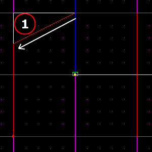
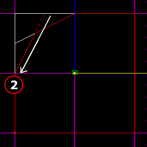
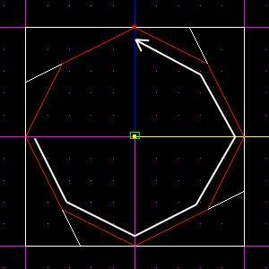
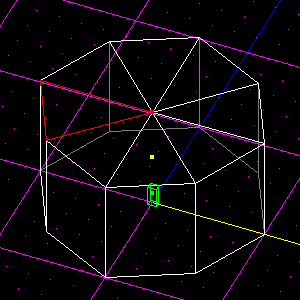
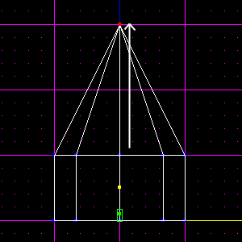
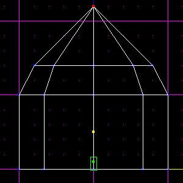
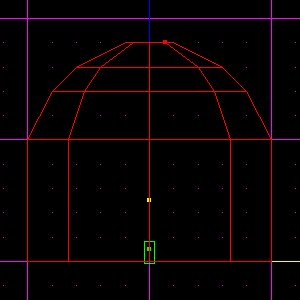

| Domes with Beams Tutorial |
|
1. Preface
This tutorial assumes basic knowledge of Jed. If you get stuck, try reading the basic tutorials first. Make sure you know all about multiselection. Mangore Kiramin's Domes Tutorial is also recommended reading.
2. Building the Dome
We start this off by building a dome using the same method as in Mangore Kiramin's tutorial (link above), except we make our initial cylinder differently.
Begin with the default Jed box. Press F4 and set:
Snap every: 0.1
Dot every: 0.2Using the cleave tool, cut up the box from the top view (Shift-1), using the images below to guide you.
 Do those same two cleaves in the other four corners:
Delete the extraneous sectors, so you have just one octogonal sector. Now enter surface mode (F) and select the top surface of the cylinder. Then, holding down Shift so the cleave tool snaps to verticies, cleave from vertex to opposite vertex, until you have divided the top surface into 8 "pie" pieces.
Enter vertex mode (V) and select the vertex you just created in the centre of the top surface. In the front view (Shift-2), raise the vertex 2 JKUs along its Z axis.
Enter surface mode and multiselect all the surfaces in the cone you just created (not the surfaces on the sides of the cylinder). Cleave those surfaces at 2 grid dots above the original top of the cylinder, then lower the vertex on top of the cone by 0.8 JKUs (4 grid dots).
Again, multiselect all the surfaces above where you just cleaved, and cleave them at 0.2 JKUs (1 grid dot) above where you cleaved before. Then, lower the vertex on top by 0.3 JKUs (1.5 grid dots - if you can't seem to get it, make sure you set your Snap every setting correctly to 0.1). Enter sector mode (S), and cleave the sector 0.2 JKUs above the cleave you just made. Delete the tiny sector on top.

On to Preparing the Beams »